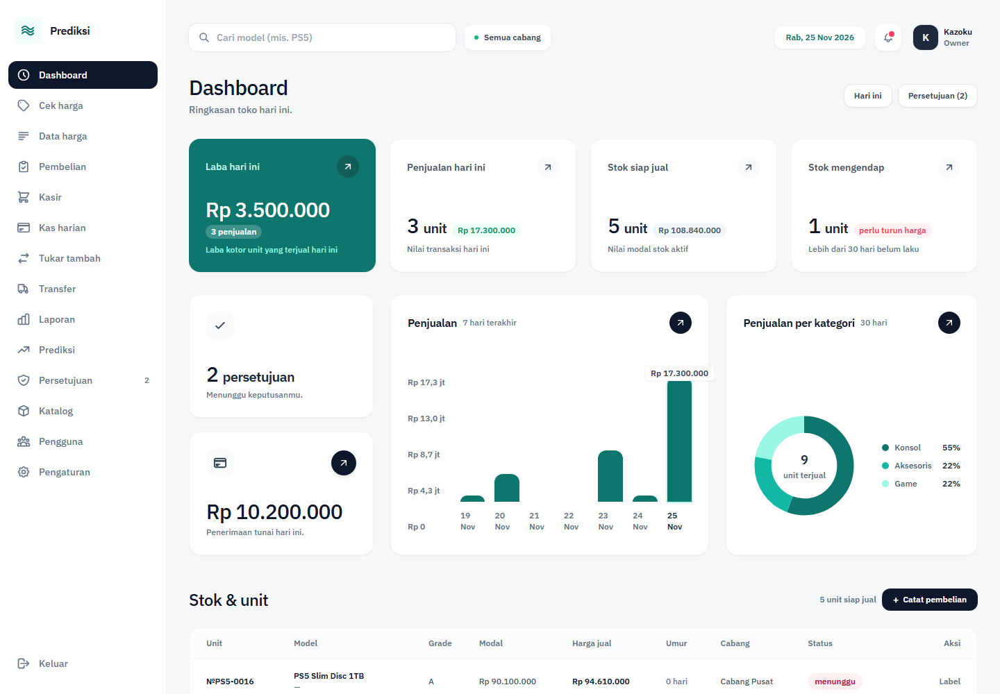
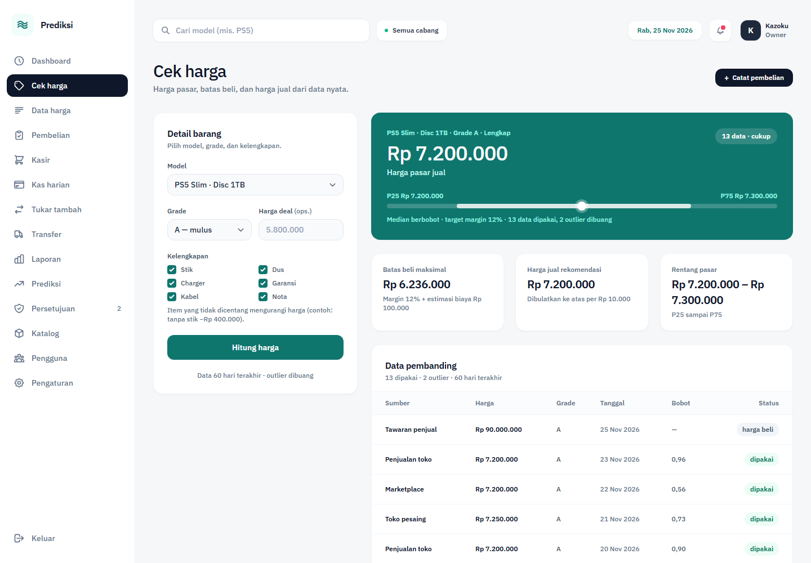
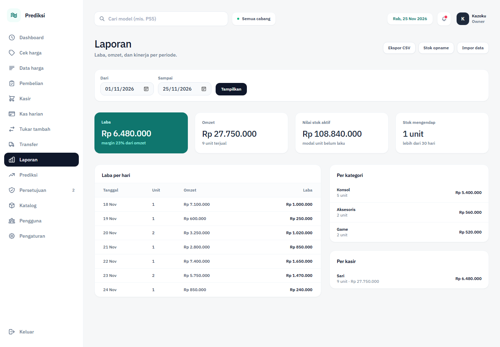
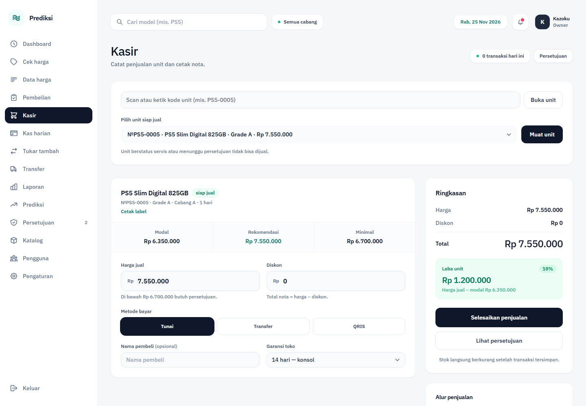
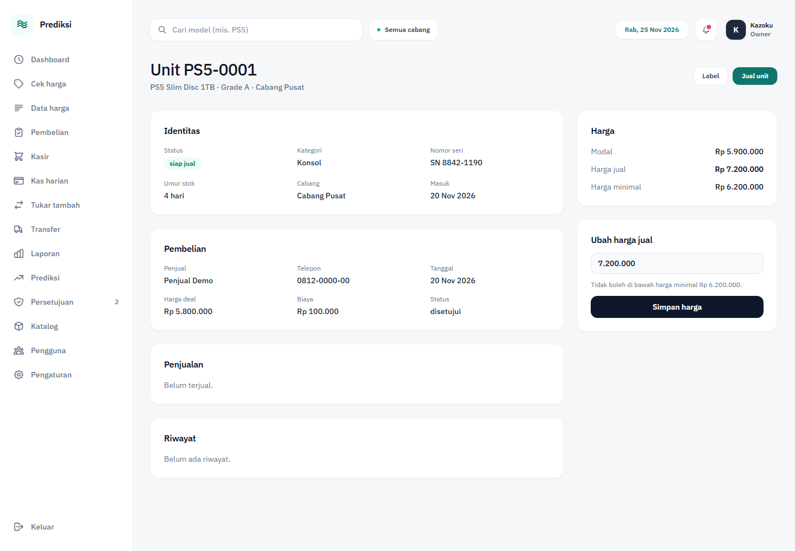
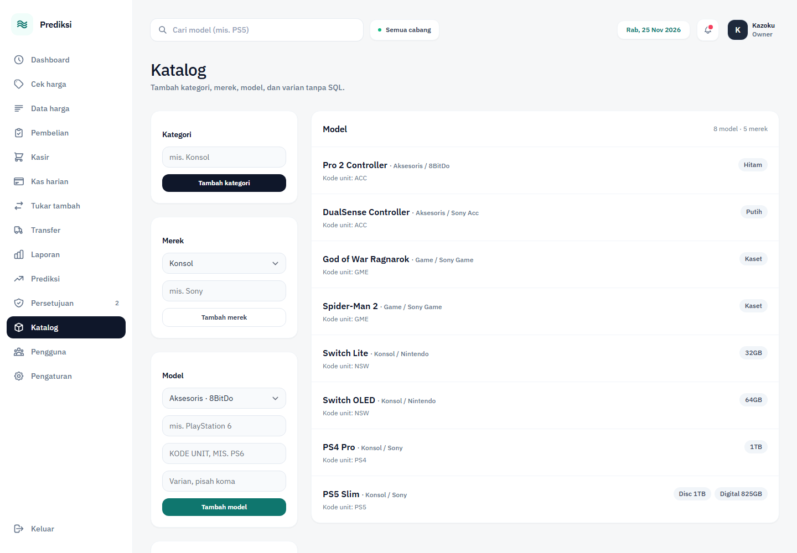
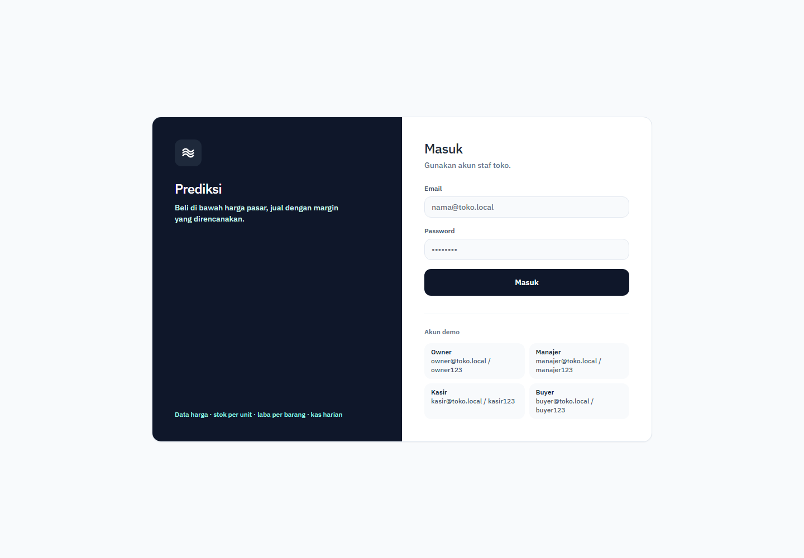

Median berbobot, bukan rata-rata
Satu listing murah tidak boleh menggeser harga pasar. Bobot turun setengah setiap 30 hari: w = w_sumber × 0,5^(umur/30). Outlier IQR dibuang dari hitungan, tapi tetap disimpan untuk diperiksa.
Prediksi adalah sistem internal untuk toko barang second: menilai harga pasar, menetapkan batas beli, dan menjaga laba per unit dari pembelian sampai kas harian.

Harga barang second tidak punya satu acuan. Penjual menawar berbeda, toko pesaing memasang harga berbeda, dan marketplace menampilkan harga yang belum tentu jadi deal. Tanpa catatan, harga beli ditentukan perasaan.
Harga jual ikut goyah. Margin tidak konsisten antar barang, dan tidak ada cara membandingkan keputusan hari ini dengan keputusan bulan lalu.
Ujungnya modal tertahan: barang yang paling lama tidak laku justru jarang terlihat sampai uangnya habis.
“Yang mahal bukan satu salah hitung, tapi keputusan yang tidak pernah tercatat.”
Prediksi menyatukan empat momen yang biasanya terpisah. Setiap keputusan uang meninggalkan jejak yang bisa diperiksa lagi.
Tawaran penjual, toko pesaing, marketplace, dan penjualan sendiri digabung. Outlier dibuang dari hitungan, tapi tetap disimpan.
Batas beli = harga pasar × (1 − margin) − biaya. Di atas batas, unit masuk status menunggu sampai manajer menyetujui.
Kasir tidak bisa menembus harga minimal tanpa persetujuan. Nota, garansi, dan laba per unit tercatat otomatis.
Kas harian, selisih, transfer cabang, opname, dan laporan laba per kategori serta per kasir.
Median berbobot, rentang P25–P75, batas beli, harga jual rekomendasi, dan estimasi laba tampil bersama. Data mentahnya tetap bisa dibuka, termasuk outlier dan bobot tiap sumber.
Kalau data kurang dari lima, sistem berhenti mengarang: pembelian wajib lewat persetujuan.

Bagian ini yang paling sering hilang dari portofolio. Fitur bisa ditambah; keputusan dan trade-off-nya yang menentukan apakah sistem bisa dipercaya.
Satu listing murah tidak boleh menggeser harga pasar. Bobot turun setengah setiap 30 hari: w = w_sumber × 0,5^(umur/30). Outlier IQR dibuang dari hitungan, tapi tetap disimpan untuk diperiksa.
Pembelian di atas batas, penjualan di bawah harga minimal, dan selisih kas membuat baris persetujuan. Unit terkunci selama menunggu; keputusan menyimpan siapa, kapan, dan nilainya.
Konsekuensi: lebih lambat di meja kasir — dan itu memang tujuannya.Setiap query memakai scope cabang dari sesi, bukan dari parameter URL. Kasir dan buyer tidak pernah menerima modal atau laba di halaman yang mereka buka.
Konsekuensi: non-owner wajib punya cabang. Validasi ini bekerja juga saat akun dibuat.Satu binary melayani HTML, API baca, dan worker ringkasan harian. MySQL sebagai satu sumber kebenaran. Tidak ada antrean atau service terpisah yang harus dijaga.
Konsekuensi: cukup untuk skala toko; pemisahan service bisa menunggu sampai benar-benar perlu.Batal jual mengembalikan unit ke stok, mencatat kas keluar, menghapus harga jual yang batal dari data pasar, dan menyimpan alasan. Bukan menghapus baris nota.
Konsekuensi: riwayat tetap jujur; laporan dan dashboard mengabaikan transaksi batal.Semua harga disimpan dalam rupiah utuh, bukan float. Pembulatan hanya di tampilan dan di aturan bisnis yang memang membulatkan ke Rp10.000.
Konsekuensi: tidak ada selisih sen yang muncul belakangan di laporan.Semua gambar diambil dari aplikasi yang benar-benar berjalan dengan data demo. Alur uang diuji manual: jual, batal, stok kembali, kas keluar, laporan bersih.





Saya memilih menuliskan batas ini daripada mengklaim sistem selesai. Untuk recruiter, daftar ini juga menunjukkan di mana saya akan mulai kalau diberi satu minggu lagi.
Belum ada backup otomatis. Ini blocker pertama sebelum data asli dipakai.
Login sudah dibatasi dan POST lintas-origin ditolak, tapi CSRF token penuh dan HTTPS belum ada.
Tabel masih memakai limit tetap; pagination dan filter menyusul saat volume data naik.
Tailwind, HTMX, dan font masih dari CDN. Untuk toko dengan internet tidak stabil, aset perlu di-self-host.
Skema dan migrasi MySQL, mesin harga, handler HTTP, pembatasan peran, template, alur persetujuan, sampai pengujian manual dan unit test. Satu binary Go, satu database, satu jalur deploy.
Kode dan demo tersedia atas permintaan.